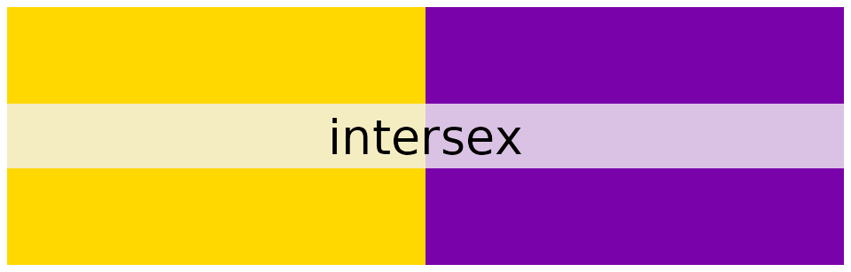
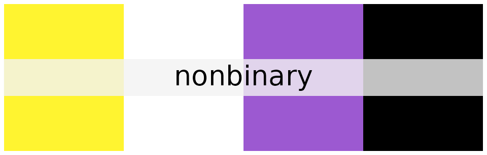
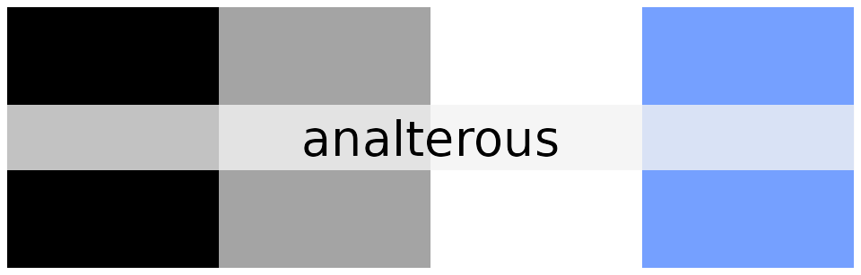
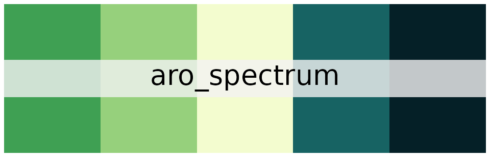
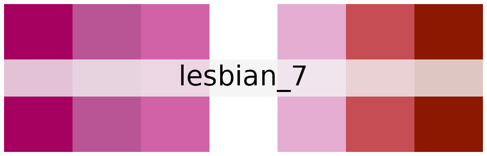
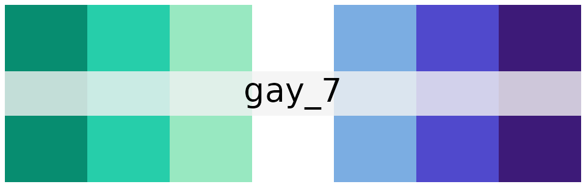
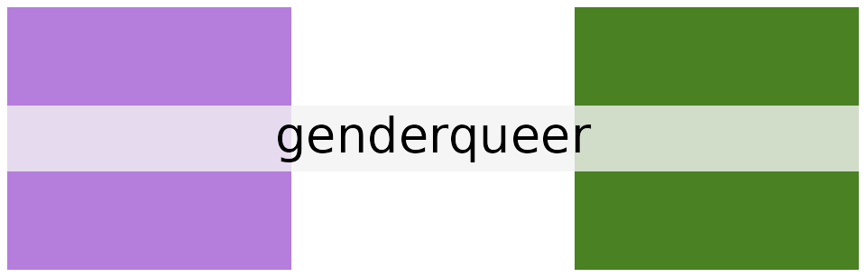

The most common flags
There are a few flags and related identities within LGBT+ community that are more recognizable than the others. Here are the selected ones that are the most well-known. For other flags, check the other sections.
palette_lgbtq("rainbow")
The flag of LGBT+ community, sometimes incorrectly associated with gay men only. Adopted in 1979 after revisions made to the original design with eight stripes reduced the number of colors to six. The one you’ll see most often, since it encompasses everyone in LGBT+ community, no exceptions.
palette_lgbtq("lesbian")Colors derived from the 2018 design with seven stripes, the third widespread design. “Lesbian” means “homosexual woman” and is one of the most known terms from the LGBT+ community. Me and my girlfriend can never remember which side goes on the top when positioning our pins.
palette_lgbtq("gay")
Sometimes “gay” is a synonym to “homosexual”, which would include lesbians, but this palette is based on a flag for MLM, men loving men, which is the other meaning of “gay”. The flag itself is inspired by the lesbian flag.
palette_lgbtq("bisexual")Originally meant “attracted to both gender”; for gender is now known to be a spectrum (or perhaps multiple spectra), the meaning was updated to say “attracted to two or more genders”. “Bisexual” isn’t synonymical to “attracted to all” anymore, for that there are “omnisexual” and “pansexual” terms.
palette_lgbtq("transgender")
A transgender person is somebody whose gender doesn’t match AGAB (assigned gender at birth). It encompasses both binary and nonbinary gender identities (in fact, currently all nonbinary people are technically transgender, since most countries only allow one of the two binary genders to be assigned at birth). The opposite of “transgender” is “cisgender”.
palette_lgbtq("asexual")
“Asexual” means “not experiencing sexual attraction”. This does not imply anything about romantic or tertiary attraction, as asexual person may be aromantic or alloromantic (see “alloace”). Asexual people are often nicknamed “aces”. The opposite of “asexual” is “allosexual”, i.e. any orientation where a person experiences sexual attraction, whether bi-, homo-, hetero- or any other.
palette_lgbtq("intersex")
A person whose sex characteristics (phenotype, chromosomes, hormonal profile, etc.) don’t align, i.e. not all of them belong to the same binary sex (male or female). These characteristics don’t have to be binary, for most sex characteristic are a spectrum. The opposite of “intersex” is “endosex”/“perisex”/“dyadic” (personally I prefer the first term).
palette_lgbtq("nonbinary")
A nonbinary person is somebody whose gender is not one of the two binary genders, i.e. woman or man. Usually nonbinary identities fall inside the spectrum between masculinity and femininity, but this need not be true for any enby (nonbinary person).
Rainbow variants
Although the six-stripe rainbow flag is the most recognizable, there are other variants, both older and newer. Some try to be more inclusive, others raise an awareness of some issue. Below are the implemented ones:
palette_lgbtq("philadelphia")
A 2017 redesign of the 6-stripe rainbow flag adopted first by the city of Philadelphia that draws attention to the struggles of people of color within the LGBT+ community.
palette_lgbtq("progress")A 2018 flag that adds a chevron to the 6-stripe rainbow flag. The chevron contains both black and brown colors added to Philadelphia rainbow flag, and transgender flag colors (light blue, pink, white).
Sexualities on A-spectrum
A lot of orientations in LGBT+ community belong to the A-spectrum, whether sexual, romantic or tertiary. Thus, enough flags were spawned to justify separating these into their own section.
palette_lgbtq("aromantic")
An aromantic person does not experience romantic attraction towards anyone.
palette_lgbtq("acesthetic")“Acesthetic” (also called “anaesthetic”) is a lack of aesthetic attraction (one of the tertiary orientations) towards other people.
palette_lgbtq("analterous")
“Alterous attraction” is a term for the gray area between romantic and platonic attraction. A person that does not experience it is called “analterous”.
palette_lgbtq("asensual")A person that does not experience sensual attraction, i.e. a desire for a (possibly intimate) physical contact like cuddling.
palette_lgbtq("ace_spectrum")This term encompasses all sexual orientations that are characterized by a complete or partial lack of sexual attraction, e.g. “asexual”, “demisexual” or “graysexual”.
palette_lgbtq("aro_spectrum")
“Aromantic spectrum” (also called “aro spectrum” or “arospec”) is an umbrella term for all romantic orientations characterized by a complete or partial lack of romantic attraction, e.g. “aromantic”, “demiromantic”, “grayromantic”… analogously to “ace spectrum”.
palette_lgbtq("aroace")“Aroace” is a term for individuals experiencing neither romantic nor sexual attration; in other words, “aromantic asexual”.
palette_lgbtq("alloace")“Alloace” means “experiencing romantic attraction and not experiencing sexual attraction”, not specifying the type of romantic attraction. “Allo” is a shortening of “alloromantic” and “ace” is a nickname for “asexual”.
palette_lgbtq("aroallo")
“Aroallo” means “experiencing sexual attraction and not experiencing romantic one”, regardless of the type of sexual attraction. “Aro” is a shortening of “aromantic” and “allo” – of “allosexual”.
Other sexualities
Even though the chapter says “sexualities”, romantic and tertiary orientations belong there as well. Since these sexualities don’t belong to A-spectrum, their umbrella term would be “allosexual” (and, analogously, “alloromantic”).
palette_lgbtq("pansexual")A pansexual person may be attracted to any person regardless of target’s gender. This sexuality differs from “omnisexual” in that this attraction is not influenced by gender, does not depend on gender. Also, pansexuality’s flag is cooler.
palette_lgbtq("androsexual")“Androsexual” is a term for any person, regardless of their gender, that is attracted to men or masculine-presenting people. Preferable to the traditional terms like “straight”/“gay”, since it can be easily used by non-binary people as well.
palette_lgbtq("gynesexual")A “gynesexual” person is attracted to women or feminine-presenting people. This term is superior to “straight [man]” and “lesbian”, since it does not imply anything about person’s gender and is usable by non-binary people as well.
palette_lgbtq("abrosexual")Abrosexuality is defined by the fluctuations of one’s sexual orientation, whether constant or occasional. It doesn’t specify where on the sexuality spectrum these fluctuations occur.
palette_lgbtq("lesbian_7")
A 7-stripe variant of the lesbian flag.
palette_lgbtq("gay_7")
A 7-stripe variant of the gay flag.
Genders on fem-masc spectrum
We’ve come to allow a lot of freedom when describing gender, but most people can describe their gender using terms of “femininity” and “masculinity”. These are the identities that fit in this space:
palette_lgbtq("demiboy")
A person that is partially a man. The other part of their gender may or may not include other genders.
palette_lgbtq("demigirl")
A person that is partially a woman. The other part of their gender may or may not include other genders.
Galactian alignment system
Some non-binary people got tired of having to explain their genders in binary terms, like in the category above. As such, they created a gender system with names based on celestial bodies that allows to specify one’s gender alignment (which does not imply one’s actual gender).
palette_lgbtq("lunarian")“Lunarian” means a person of female-aligned identity or whose expression is feminine-aligned.
palette_lgbtq("solarian")A non-binary person whose identity is male-aligned or whose expression is masculine-aligned.
palette_lgbtq("stellarian")A term for a non-binary person of neutral-aligned identity, unrelated to manhood and womanhood, however still perceived as gendered.
palette_lgbtq("helian")A non-binary person whose identity is male-aligned or otherwise connected to manhood. Different from “solarian” in that their identity does not need to be masculine-aligned.
Other genders
…and all the other terms related to gender that do not fit in the fem-masc spectrum:
palette_lgbtq("genderfluid")
A gender identity which fluctuates over time between feeling masculine, feminine, androgynous, and other gender descriptors. Fluctuations may be random or regular.
palette_lgbtq("genderqueer")
“Genderqueer” is an umbrella for all gender identites that are queer in one way or another.
palette_lgbtq("agender")An agender person is somebody who doesn’t feel connection with any gender, who can be described as having no gender.
palette_lgbtq("bigender")
“Bigender” means a gender identity composed of two genders a person feels strong connection with. They may exist simultaneously or fluctuate over time. One of the two genders is probably stolen from some agender person.
Subcultures
While somebody’s sexual orientation isn’t that person’s lifestyle (even though there are people suggesting otherwise), the terms here describe the way certain people express and identify themselves in strong connection with their sexuality. In a way, this is the closest to “lifestyle” you can get here.
palette_lgbtq("amatopunk")Amatopunks challenge the amatonormativity, i.e. the societal expectations that everybody should desire a monogamous sexual and romantic relationship, exclusive towards polyamorous, asexual, and aromantic people (as in, belonging to any of these three groups).
palette_lgbtq("bear")Typically “bears” are gay men (or masculine-aligned nonbinary people) with plethora of body hair and - usually - a sizable overall volume, whether from being fat, muscular, or stocky.
palette_lgbtq("butch")“Butch” is a term most commonly used to describe a lesbian with a masculine expression. There exists a variant with 5 stripes too, albeit far less prevalent.
palette_lgbtq("femme")“Femme” is a term most commonly used to describe a lesbian with a feminine expression. There are a lot of different proposed flags yet none in predominant use, and the one included here was chosen for the best distinguishability of its colors.
palette_lgbtq("otter")Since “bear” triggers a natural association with a high-volume person, as explained before, the “otter” is its low-volume counterpart; retaining the other characteristics referring to maleness, gayness, and hairiness.
Uncategorized
All the terms that do not fit elsewhere.
palette_lgbtq("queerhet")Queerhets use this term to signalize that allocishets are not the only heterosexual people in the existence. There exist people who are both straight and queer – by being either transgender or A-spec.